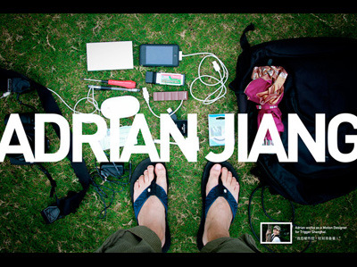
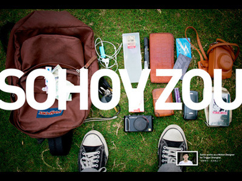
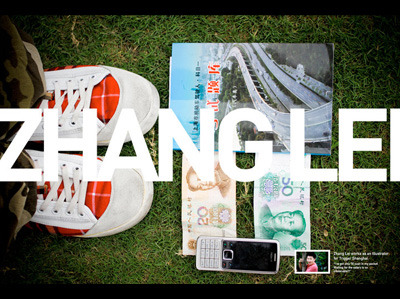
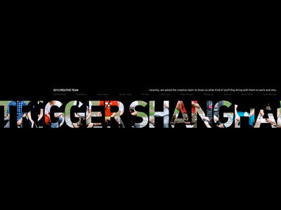

Mon, 01 Nov 2010 11:06:13 · Trigger · TriggerLLC · Shanghai · Creative · China · Digital · Games
trigger shanghai creative showcase open your




Trigger Shanghai Creative Showcase ~ Open Your Bag! ~ part 2.
More pix of Trigger Shanghai creative team… ^_^
Check out our blog here.